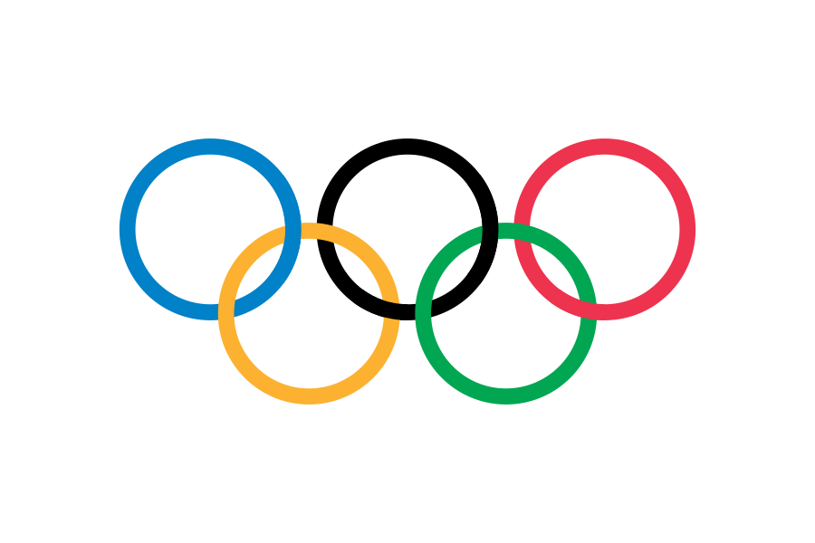

El emblema olímpico, compuesto por cinco aros entrelazados, encierra un profundo simbolismo que trasciende las fronteras geográficas y culturales. Estos cinco anillos representan los cinco continentes del mundo: Europa, Asia, África, Oceanía y América. Cada uno de estos aros lleva uno de los colores básicos: azul, amarillo, negro, verde y rojo. 
Este símbolo, utilizado en uno o varios colores, se convierte en un vínculo visual que une a todas las naciones participantes en los Juegos Olímpicos. De hecho, al menos uno de los colores presentes en los anillos olímpicos se encuentra en la bandera de cada país que toma parte en la competición.
El significado de estos anillos va más allá de lo meramente estético. Representan la esencia misma del movimiento Olímpico, simbolizando la actividad, la unión y el encuentro de los atletas de todo el mundo en un evento deportivo sin precedentes. De acuerdo con el Artículo 8 de la Carta Olímpica, los cinco anillos expresan la idea de la convergencia de los continentes y la celebración de la diversidad y la unidad en los Juegos Olímpicos. Así, este símbolo emblemático nos recuerda la importancia del deporte como puente para la comprensión y la cooperación entre las naciones.
Autor original Pierre de Coubertin
Imagen disponible en Wikimedia Commons
{kind=link}